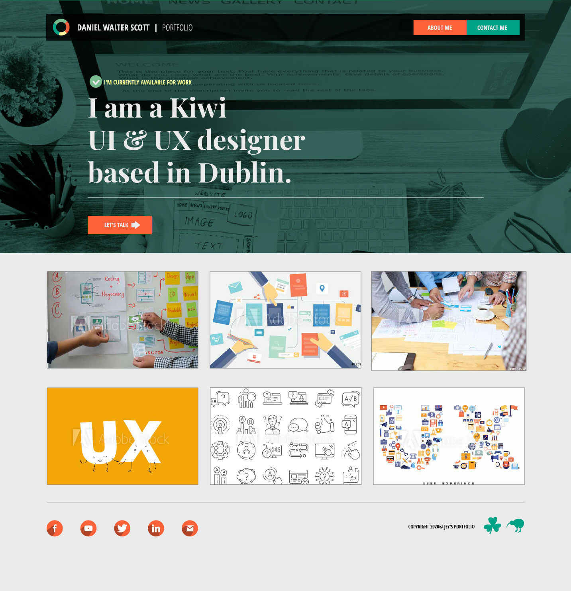

Design of the portfolio web-page
This Project was made as a part of online course of a designer Daniel Walter Scott. In this course we were learning basic tools for creating a website layout. As a main tool for creating this project we were using Adobe Illustrator. In the beginning, we learned how to use the grid and set up the rulers. After that, we were tought how to find the Stock Images as a part of the content. Later on, we put the images into the layout and applied several filters to create a nice background. The main idea was to learn the principles of responsive design along with how to use the most of the Adobe Illustrator tools, and then apply them in a layout we've created.
